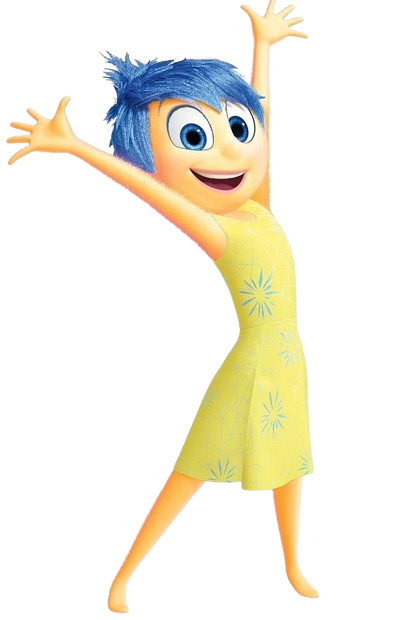

A psicologia no Divertidamente
Você já se perguntou o que passa na cabeça de uma pessoa para ter determinado comportamento? A mente humana sempre foi fonte de muita curiosidade e, para os leigos, ela é ainda mais misteriosa. Foi pensando em explorar conceitos científicos e psicológicos que a Pixar criou o filme “Divertidamente”.
Saiba Mais
